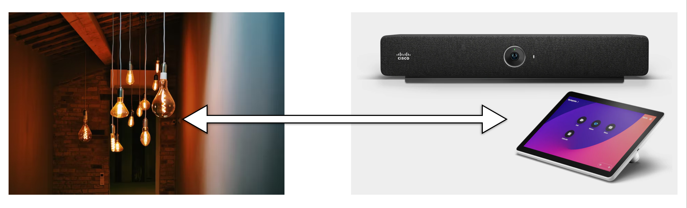
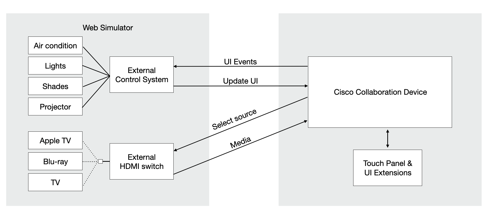

UI Extensions Simulator
Connect
Connected
x
Room simulator for RoomOS
Control a lights, shades etc in a virtual room from the touch panel on a physical Cisco collaboration device.

Connect to video device
Host
Username
Password
Connect
Trouble connecting? Make sure you can log in to the device on
a video device
(accept the self-signed certificate).
📹
Connected to video device
The simulator is connected and listening to events from
🎨
UI extensions
Panels to control the lights, shades etc in the room from your touch controller.
Install
Uninstall
🖥
Virtual sources
Set the media players as external sources so you can select them from the share tray.
Install
Remove
🔎
View APIs
Show events and commands in a terminal-like window.

The web page connects to the device using the
JSXAPI
.